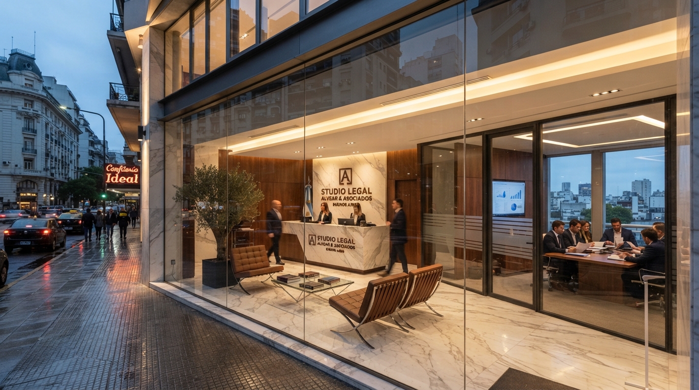

Nuestra Historia y Trayectoria

Estudio Jurídico Ginepro & Asociados nació con el objetivo de ofrecer un servicio legal cercano y transparente en la Ciudad de Buenos Aires. A lo largo de estos años, hemos asesorado tanto a personas particulares frente a situaciones civiles complejas como a pequeñas y medianas empresas en su desarrollo diario.
Creemos firmemente en el ejercicio del derecho basado en la ética, la honestidad en el diagnóstico preliminar de cada causa y la búsqueda de soluciones prácticas que eviten dilaciones innecesarias.